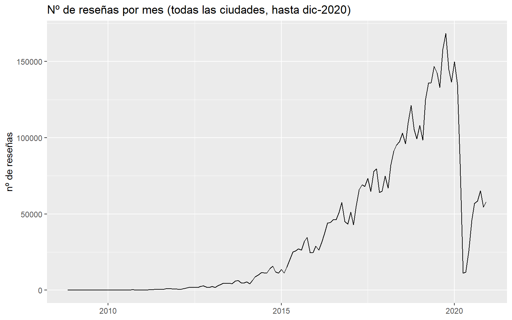
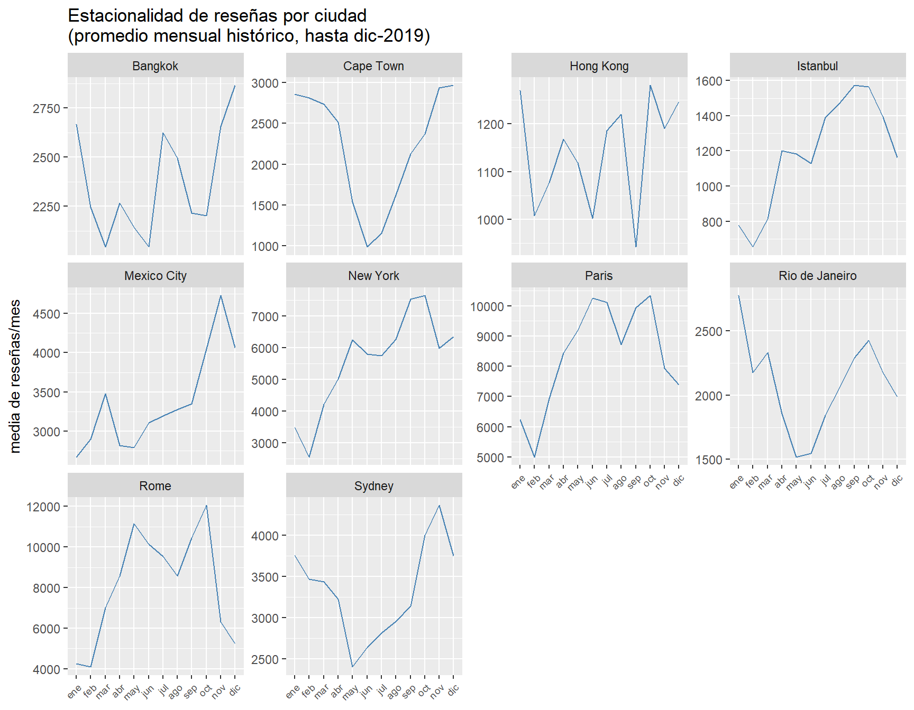

Code
library(tidyverse)Fase ETL: extracción, transformación y carga de datos - reviews.csv
library(tidyverse)Este documento recoge la fase de ETL de reviews.csv, en paralelo al ETL de listings.csv. El objetivo es dejar un dataset de reseñas limpio y una agregación temporal por listing/mes, necesaria para el componente de estacionalidad del proyecto.
reviews <- read_csv("data/reviews.csv", show_col_types = FALSE)
listings <- read_csv("data/listings_clean.csv", show_col_types = FALSE)glimpse(reviews)Rows: 5,373,143
Columns: 4
$ listing_id <dbl> 11798, 15383, 16455, 17919, 26827, 74561, 140355, 162163, …
$ review_id <dbl> 330265172, 330103585, 329985788, 330016899, 329995638, 330…
$ date <date> 2018-09-30, 2018-09-30, 2018-09-30, 2018-09-30, 2018-09-3…
$ reviewer_id <dbl> 11863072, 39147453, 1125378, 172717984, 17542859, 17304478…nrow(reviews)[1] 5373143reviews.csv contiene 5.373.143 filas y 4 columnas (listing_id, review_id, date, reviewer_id), en línea con lo indicado en la documentación del dataset (~5 millones de registros).
reviews %>%
summarise(across(everything(), ~sum(is.na(.x))))# A tibble: 1 × 4
listing_id review_id date reviewer_id
<int> <int> <int> <int>
1 0 0 0 0reviews %>%
summarise(
min_date = min(date, na.rm = TRUE),
max_date = max(date, na.rm = TRUE),
n_date_na = sum(is.na(date))
)# A tibble: 1 × 3
min_date max_date n_date_na
<date> <date> <int>
1 2008-11-16 2021-03-01 0Sin nulos en ninguna columna, y date parsea correctamente en un rango 2008-11-16 a 2021-03-01, consistente con el periodo del dataset (2008-2021).
review_idCada reseña debería tener un review_id único. Se comprueba si hay duplicados y, de haberlos, si son filas idénticas repetidas o el mismo ID usado para registros distintos:
reviews %>%
count(review_id, sort = TRUE) %>%
filter(n > 1)# A tibble: 160 × 2
review_id n
<dbl> <int>
1 200088015 2
2 205182329 2
3 223954194 2
4 256197483 2
5 256940062 2
6 267670224 2
7 268584240 2
8 273473836 2
9 275984980 2
10 280843268 2
# ℹ 150 more rows# ¿Son duplicados exactos o el mismo review_id con datos distintos?
reviews %>%
add_count(review_id) %>%
filter(n > 1) %>%
arrange(review_id) %>%
distinct(review_id, listing_id, date, reviewer_id) %>%
count(review_id) %>%
count(n, name = "n_review_ids")# A tibble: 1 × 2
n n_review_ids
<int> <int>
1 2 160Hay 160 review_id duplicados, y en todos los casos las dos filas difieren en listing_id (no son duplicados exactos). Se investiga el patrón antes de decidir el tratamiento:
reviews %>%
add_count(review_id) %>%
filter(n > 1) %>%
arrange(review_id, date) %>%
select(review_id, listing_id, date, reviewer_id) %>%
print(n = 30)# A tibble: 320 × 4
review_id listing_id date reviewer_id
<dbl> <dbl> <date> <dbl>
1 200088015 2997346 2017-10-04 123346683
2 200088015 22219088 2017-10-04 123346683
3 205182329 2997346 2017-10-21 23770481
4 205182329 22219088 2017-10-21 23770481
5 223954194 2997346 2018-01-02 77129337
6 223954194 22219088 2018-01-02 77129337
7 256197483 2997346 2018-04-22 115838328
8 256197483 22219088 2018-04-22 115838328
9 256940062 466155 2018-04-24 172857558
10 256940062 22219250 2018-04-24 172857558
11 267670224 5880984 2018-05-22 13538867
12 267670224 22219081 2018-05-22 13538867
13 268584240 5880984 2018-05-25 123864726
14 268584240 22219081 2018-05-25 123864726
15 273473836 5880984 2018-06-06 126086197
16 273473836 22219081 2018-06-06 126086197
17 275984980 5880984 2018-06-12 6150664
18 275984980 22219081 2018-06-12 6150664
19 280843268 5880984 2018-06-24 122553749
20 280843268 22219081 2018-06-24 122553749
21 289753825 10072453 2018-07-13 29297595
22 289753825 22219134 2018-07-13 29297595
23 294423663 9126251 2018-07-22 35690267
24 294423663 22219090 2018-07-22 35690267
25 303293968 2997346 2018-08-07 68390014
26 303293968 22219088 2018-08-07 68390014
27 307840556 10072453 2018-08-15 116167974
28 307840556 22219134 2018-08-15 116167974
29 327085784 9126251 2018-09-23 52635330
30 327085784 22219090 2018-09-23 52635330
# ℹ 290 more rows# ¿El emparejamiento de listing_id es consistente, o hay mezclas aleatorias?
pares_duplicados <- reviews %>%
add_count(review_id) %>%
filter(n > 1) %>%
group_by(review_id) %>%
summarise(par = paste(sort(unique(listing_id)), collapse = "-")) %>%
count(par, sort = TRUE)
print(pares_duplicados, n = Inf)# A tibble: 11 × 2
par n
<chr> <int>
1 5878807-22219085 37
2 4532587-22219093 34
3 5880984-22219081 18
4 10072453-22219134 14
5 21242412-22219082 11
6 5555126-22219083 11
7 9126251-22219090 10
8 14926853-22219095 8
9 2997346-22219088 7
10 5024565-22219080 6
11 466155-22219250 4# ¿Ambos listing_id de cada pareja corresponden al mismo alojamiento físico?
ids_pares <- pares_duplicados %>%
separate(par, into = c("id1", "id2"), sep = "-", convert = TRUE)
listings %>%
filter(listing_id %in% c(ids_pares$id1, ids_pares$id2)) %>%
select(listing_id, host_id, latitude, longitude, name, city) %>%
arrange(listing_id) %>%
print(n = 30)# A tibble: 22 × 6
listing_id host_id latitude longitude name city
<dbl> <dbl> <dbl> <dbl> <chr> <chr>
1 466155 2315268 41.9 12.5 Bernini House - St. Peter / Va… Rome
2 2997346 2315268 41.9 12.5 Corso Vittorio - Campo De Fiori Rome
3 4532587 2315268 41.9 12.5 Pasquino Apartment - Navona sq… Rome
4 5024565 2315268 41.9 12.5 Quiriti House - Luxory LOFT S.… Rome
5 5555126 2315268 41.9 12.5 Babuino Deluxe - Spanish Steps Rome
6 5878807 2315268 41.9 12.5 Fontana Bedroom (NO apartment)… Rome
7 5880984 2315268 41.9 12.5 Archi Vittorio - Campo De Fiori Rome
8 9126251 2315268 41.9 12.5 Terrace Suite Elena - Campo de… Rome
9 10072453 2315268 41.9 12.5 Baullari House - Campo de' Fio… Rome
10 14926853 2315268 41.9 12.5 Alice House - Trastevere Rome
11 21242412 2315268 41.9 12.5 Monti Deluxe - Spectacular Vie… Rome
12 22219080 162347026 41.9 12.5 Quiriti House - Luxory LOFT S.… Rome
13 22219081 162347026 41.9 12.5 Archi Vittorio - Campo De' Fio… Rome
14 22219082 162347026 41.9 12.5 Monti Deluxe - Spectacular Vie… Rome
15 22219083 162347026 41.9 12.5 Babuino Deluxe - Spanish Steps Rome
16 22219085 162347026 41.9 12.5 Fontana Bedroom (NO apartment… Rome
17 22219088 162347026 41.9 12.5 Corso Vittorio - Campo de' Fio… Rome
18 22219090 162347026 41.9 12.5 Terrace Suite Elena - Campo de… Rome
19 22219093 162347026 41.9 12.5 Pasquino Apartment - Navona sq… Rome
20 22219095 162347026 41.9 12.5 Alice House - Trastevere Rome
21 22219134 162347026 41.9 12.5 Baullari House - Campo de' Fio… Rome
22 22219250 162347026 41.9 12.5 Bernini House - St. Peter / Va… Rome Hallazgo: los 160 review_id duplicados corresponden a 11 propiedades en Roma (mismas coordenadas exactas, mismo nombre salvo variaciones tipográficas menores), publicadas primero bajo un host_id y después re-publicadas bajo un host_id distinto — consistente con una migración de cuenta del anfitrión. Durante la transición, algunas reseñas quedaron asociadas con el mismo review_id a ambos listing_id del mismo alojamiento. Es un patrón identificado y explicable, no ruido aleatorio, y afecta a un volumen ínfimo (160 de 5.373.143 filas, 0,003%).
review_idSe conserva una única fila por review_id, quedándonos con el listing_id más reciente de cada pareja (el ID vigente tras la migración). “Más reciente” se traduce aquí en el listing_id de mayor valor numérico, ya que Airbnb asigna estos IDs de forma creciente en el momento de creación del anuncio — el ID más alto de la pareja es, por tanto, el publicado después de la migración:
reviews <- reviews %>%
group_by(review_id) %>%
slice_max(listing_id, n = 1, with_ties = FALSE) %>%
ungroup()
nrow(reviews)[1] 5372983El resultado (5.372.983) coincide exactamente con 5.373.143 − 160, confirmando que la deduplicación eliminó únicamente los casos identificados, sin afectar al resto.
listings.csvCon reviews ya deduplicado, se comprueba la correspondencia de listing_id entre ambos datasets:
# ¿Cuántos listing_id de reviews NO existen en listings?
reviews %>%
filter(!listing_id %in% listings$listing_id) %>%
summarise(n = n(), pct = round(100 * n() / nrow(reviews), 4))# A tibble: 1 × 2
n pct
<int> <dbl>
1 0 0# ¿Cuántos listings no tienen ninguna reseña en reviews.csv?
listings %>%
filter(!listing_id %in% reviews$listing_id) %>%
summarise(n = n(), pct = round(100 * n() / nrow(listings), 2))# A tibble: 1 × 2
n pct
<int> <dbl>
1 86043 30.8Todos los listing_id de reviews.csv existen en listings.csv (0 huérfanos). Hay 86.043 listings (30,8%) sin ninguna reseña en reviews.csv.
has_reviewsEn listings_clean.csv, la variable has_reviews (basada en review_scores_rating) marca 91.292 listings sin reviews — una cifra distinta a los 86.043 sin ninguna fila en reviews.csv. La diferencia no es una simple resta (91.292 − 86.043 = 5.249): al calcularla directamente sobre los datos (no por diferencia de totales), da 5.250 casos — señal de que los dos conjuntos no son subconjuntos exactos entre sí. Se investiga antes de asumir una causa:
resumen_huerfanos <- listings %>%
filter(has_reviews == FALSE, listing_id %in% reviews$listing_id) %>%
select(listing_id) %>%
left_join(
reviews %>% group_by(listing_id) %>% summarise(n_reviews = n(), ultima_review = max(date)),
by = "listing_id"
)
resumen_huerfanos %>%
summarise(n_casos = n(), mediana_n_reviews = median(n_reviews), max_n_reviews = max(n_reviews))# A tibble: 1 × 3
n_casos mediana_n_reviews max_n_reviews
<int> <dbl> <int>
1 5250 1 18# Distribución completa de n_reviews
resumen_huerfanos %>%
summarise(
p50 = quantile(n_reviews, 0.5), p75 = quantile(n_reviews, 0.75),
p90 = quantile(n_reviews, 0.9), p99 = quantile(n_reviews, 0.99),
max = max(n_reviews)
)# A tibble: 1 × 5
p50 p75 p90 p99 max
<dbl> <dbl> <dbl> <dbl> <int>
1 1 1 2 3 18# ¿Estos casos se concentran cerca del final del periodo del dataset? (hipótesis de
# desfase temporal entre listings.csv y reviews.csv)
resumen_huerfanos %>%
summarise(
min_ultima_review = min(ultima_review),
mediana_ultima_review = median(ultima_review),
max_ultima_review = max(ultima_review)
)# A tibble: 1 × 3
min_ultima_review mediana_ultima_review max_ultima_review
<date> <date> <date>
1 2010-05-28 2018-07-24 2021-01-06 Conclusión: el 90% de estos 5.250 casos tiene 1-2 reseñas (p99 = 3), y la mediana de su última reseña (2018-07-24) está lejos del límite superior del dataset (2021-03-01) — descarta el desfase temporal como explicación. El patrón encaja con el comportamiento conocido de Airbnb de no publicar una puntuación agregada hasta acumular un mínimo de reseñas (habitualmente 3). Es un hallazgo de negocio, no un error de datos.
listing_id + mesreviews_mensual <- reviews %>%
mutate(anio_mes = floor_date(date, unit = "month")) %>%
count(listing_id, anio_mes, name = "n_reviews_mes")
glimpse(reviews_mensual)Rows: 2,123,657
Columns: 3
$ listing_id <dbl> 2577, 2595, 2595, 2595, 2595, 2595, 2595, 2595, 2595, 25…
$ anio_mes <date> 2019-01-01, 2009-11-01, 2009-12-01, 2010-04-01, 2010-05…
$ n_reviews_mes <int> 1, 1, 2, 1, 1, 2, 1, 1, 1, 1, 1, 2, 1, 1, 1, 2, 1, 1, 1,…Se agrega a nivel listing_id + mes (no por día, ni a nivel global) porque es la granularidad que necesitan los dos análisis siguientes: la evolución temporal global (4.2) y la estacionalidad por ciudad (4.3). El modelo de precio también necesita una variable de actividad de reseñas por listing, pero no reutilizará esta agregación: se calculará de forma independiente en el clustering, directamente sobre reviews_clean.csv sin el filtro de meses finales de la sección 4.2 — ese filtro tiene sentido para no confundir el corte del dataset con una caída de demanda real en una gráfica agregada, pero no para contar la actividad de un listing individual, donde esos últimos meses son reseñas reales que sí deben contarse.
reviews.csv termina en 2021-03-01, y las reseñas se escriben con retraso respecto a la estancia — los últimos meses del dataset están necesariamente incompletos (censura por la derecha). Se excluyen antes de analizar la tendencia, para no confundir ese artefacto de recolección con una caída de demanda real:
reviews_mensual_filtrado <- reviews_mensual %>%
filter(anio_mes < as.Date("2021-01-01"))
reviews_mensual_filtrado %>%
group_by(anio_mes) %>%
summarise(n_reviews_mes = sum(n_reviews_mes)) %>%
ggplot(aes(x = anio_mes, y = n_reviews_mes)) +
geom_line() +
labs(title = "Nº de reseñas por mes (todas las ciudades, hasta dic-2020)",
x = NULL, y = "nº de reseñas")
Se observa un crecimiento sostenido hasta 2019, y la caída abrupta de 2020 asociada al impacto de la pandemia en el turismo, con recuperación parcial hacia finales de año — sin el artefacto de truncamiento que aparecía al incluir los meses finales del dataset.
reviews_mensual_ciudad <- reviews_mensual_filtrado %>%
left_join(listings %>% select(listing_id, city), by = "listing_id") %>%
group_by(city, anio_mes) %>%
summarise(n_reviews_mes = sum(n_reviews_mes), .groups = "drop")
# Verificación: no debería haber ningún listing_id sin match en listings
reviews_mensual_ciudad %>% filter(is.na(city)) %>% summarise(n = n())# A tibble: 1 × 1
n
<int>
1 0# Se excluye 2020 por la caída por la pandemia
reviews_mensual_ciudad %>%
filter(anio_mes < as.Date("2020-01-01")) %>%
mutate(mes = month(anio_mes, label = TRUE)) %>%
group_by(city, mes) %>%
summarise(media_reviews = mean(n_reviews_mes), .groups = "drop") %>%
ggplot(aes(x = mes, y = media_reviews, group = city)) +
geom_line(color = "steelblue") +
facet_wrap(~city, scales = "free_y") +
labs(title = "Estacionalidad de reseñas por ciudad\n(promedio mensual histórico, hasta dic-2019)",
x = NULL, y = "media de reseñas/mes") +
theme(axis.text.x = element_text(angle = 45, hjust = 1, size = 7))
Hallazgo: Sydney y Cape Town (hemisferio sur) muestran un patrón de estacionalidad invertido respecto a las ciudades del hemisferio norte — valle en abril-julio (su invierno) y pico en noviembre-enero (su verano), frente al pico estival boreal (jun-sep) de ciudades como Paris, Rome o New York. Es un patrón climático coherente, útil como variable o al menos como justificación cualitativa en la parte del sponsor de la memoria.
Se guarda un único fichero, reviews_clean.csv (el dataset de reseñas deduplicado, a nivel de reseña individual). reviews_mensual_filtrado y reviews_mensual_ciudad (secciones 4.1-4.3) no se guardan aparte: son agregaciones calculadas para los análisis de este propio documento, no una entrada reutilizable de las fases siguientes — el clustering recalculará la actividad de reseñas por listing directamente desde reviews_clean.csv. Los hallazgos de tendencia y estacionalidad quedan documentados aquí mismo y se recuperan desde este análisis para la memoria.
write_csv(reviews, "data/reviews_clean.csv")